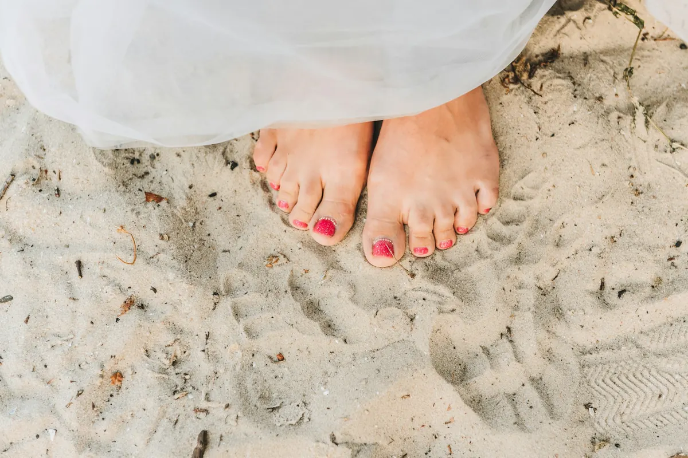

Podologia
Wrastające paznokcie, odciski, modzele, zniszczona płytka. Pomagamy bezboleśnie, sterylnymi narzędziami, a efekt zwykle czuć od razu po wizycie.

Z czym przychodzisz?
Wybierz problem, a pokażemy, jak go rozwiązujemy.
Wrastający paznokieć
Paznokieć wbija się w wał boczny: boli przy dotyku, pojawia się zaczerwienienie i stan zapalny. Najczęściej winne jest obcinanie „na okrągło”, ciasne buty albo predyspozycje (szeroka lub rurkowata płytka, haluksy, płaskostopie).
Kostka Arkady
Płytkę ustawiamy we właściwej pozycji i utrwalamy akrylem z dodatkami przeciwbakteryjnymi. Można przy stanie zapalnym, nawet przy wieloletnim problemie. Ból mija zwykle na pierwszej wizycie.
Klamra UniBrace
Klamra robiona pod Twój paznokieć, zakładana pod lub na płytkę, z dobraną siłą korekcji.
Tamponada i klamry drutowe
Tamponada na początku wrastania; klamra drutowa przy paznokciach rurkowatych. Noszona od miesiąca do kilkunastu miesięcy, z kontrolą co kilka tygodni.
Gdy palec jest mocno spuchnięty, nie czekaj: im wcześniej, tym krótsza terapia.
Odcisk
Stożkowate zgrubienie z twardym trzpieniem, który uciska i boli. Powstaje od długotrwałego ucisku, najczęściej na palcach i między nimi.
Usunięcie trzpienia
Specjalistyczne frezy i skalpel: zrogowacenie oddzielamy delikatnie, bez bólu, także w przestrzeniach międzypalcowych.
Częściej dotyczy osób z cukrzycą i reumatyzmem; wtedy pielęgnacja u podologa jest szczególnie ważna.
Modzele
Rozlane, twarde zgrubienie na podeszwie, zwykle pod piętą lub głowami kości śródstopia. Nie boli, ale potrafi pękać.
Usuwanie warstwowe
Usuwamy jedną warstwę na wizytę, skalpelem i frezami. Przy wielowarstwowym modzelu potrzeba kilku wizyt.
Przyczyna
Podpowiemy, co zmienić (obuwie, pielęgnacja), żeby modzele nie wracały.
Zniszczona płytka
Płytka zdeformowana po urazie, krwiaku, grzybicy lub usunięciu, odklejona od łożyska albo łamliwa.
Rekonstrukcja
Odbudowujemy płytkę masą podologiczną o działaniu grzybobójczym i bakteriobójczym. Paznokieć odzyskuje kształt i jest chroniony, a zdrowa płytka spokojnie odrasta.
Pękające pięty i zrogowacenia
Zrogowaciały, popękany naskórek, bolesne miejsca i stopy, które wymagają więcej uwagi niż zwykły pedicure.
Pedicure leczniczy
Delikatne, bezbolesne usunięcie zrogowaceń sterylnymi narzędziami. Ulga od razu; mocno zaniedbane stopy potrzebują kilku wizyt.
Podejrzenie grzybicy
Przebarwiona, krusząca się płytka albo zmiany na skórze stóp. Zanim zaczniesz leczenie, warto wiedzieć, z czym walczysz.
Badanie w gabinecie
Pobieramy materiał do badania mikologicznego i bakteriologicznego na miejscu.
Przed pobraniem
Skóra: bez kremów i maści odkażających. Paznokcie: nie obcinaj ich, nie maluj i nie używaj zmywacza z acetonem.
Pedicure kosmetyczny czy leczniczy?
Kosmetyczny
Dla zdrowych stóp, które mają po prostu ładnie wyglądać.
- kąpiel zmiękczająca i usunięcie zrogowaceń
- opracowanie skórek i paznokci
- lakier klasyczny lub hybrydowy, krem
Leczniczy (podologiczny)
Gdy coś boli albo przeszkadza: odciski, modzele, pęknięcia, wrastające paznokcie.
- bezbolesne usuwanie zrogowaceń i odcisków
- terapia wrastających paznokci
- sterylne narzędzia, porada co dalej

Bezpiecznie jak w gabinecie medycznym
Wszystkie narzędzia sterylizujemy w autoklawie, który mamy na miejscu. Stosujemy procedury i preparaty dezynfekcyjne zgodne ze standardami UE.
Więcej o nas